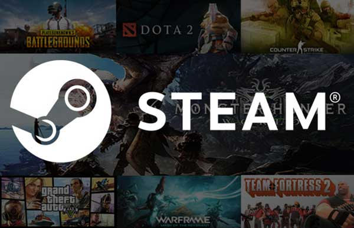

STEAM Steam merupakan layanan sejenis market barang digital khusus game yang dibuat oleh Valve Corporation. Layanan ini bekerja sebagai pengumpul atau penyalur data game yang dimiliki oleh pengembang dan dijual disini, semacam Playstore atau Apple Store pada smartphone. Bisa dikatakan hampir semua aplikasi game bisa didapatkan di aplikasi tersebut, baik itu berjenis indie ataupun milik pengembang besar, semuanya dapat diakses dengan mudah menggunakan satu aplikasi. Sebelum rilisnya Steam, pihak perusahaan yakni Valve Corporation sempat mendapat masalah kecil namun untungnya dapat diselesaikan dengan cepat. Steam kemudian diluncurkan dengan berbagai pelayanan atau fitur yang terdapat dalam aplikasinya; seperti menyediakan verifikasi orisinalitasnya untuk setiap game yang terdaftar dalam platform tersebut, hingga memiliki fitur Digital Rights Management (DRM) yang mana dapat mengatur masuk keluarnya data game yang diunduh dari Steam.
Manfaat dari STEAM Dengan menggunakan Steam, pengguna juga dapat bergabung ke dalam komunitas para pemain game, dimana dalam komunitas tersebut siapa pun memiliki kemungkinan untuk membahas suatu topik pembicaraan yang tentu berhubungan dengan game, misalkan mekanisme, cara bermain, produk game, dan lain sebagainya. Anda juga dapat memberikan komentar dan membuka topik pembicaraan. Intinya semacam forum yang disediakan khusus untuk para penggunanya
Jenis Game dalam Steam  Layanan Steam sudah berdiri selama lebih dari 15 tahun yang mengartikan mereka bukanlah layanan baru sehingga dapat dipastikan sudah banyak para pengembang game yang terdaftar pada layanan ini. Dalam platform Steam pun para konsumen dapat mencari berbagai jenis game berdasar kategori yang berbeda seperti action, adventure, fps, racing, dan lain sebagainya. Dalam platform ini juga terdapat banyak game berjenis Indie, merupakan game yang hanya dibuat oleh kelompok kecil bukan perusahaan besar. Selain game, Steam juga menawarkan penjualan software yang dapat diunduh dari berbagai pengembang software di dunia. Jenis FPS o Rainbow Six Siege o CS:GO o PUBG o Insurgency o Tom Clancy Wildlands o Arma 3 o Team Fortress o dan masih banyak lagi tentunya Jenis Action Open World o GTA V (Grand Theft Auto Five) o ASSSASSINS CREED ODDYSSEY o FAR CRY 5 o Saint Row Series o The Witcher 3 Wild hunt o SKYRIM o CYBERPUNK 2077 o WATCH DOGS o dan masih banyak lagi tentunya
Contoh Pembelian Game di Steam : 1. Download Steam di sini 2. Jalankan Steam client software dan log in pada Steam 3. Cari game yang diinginkan melalui menu yang tersedia atau menggunakan fitur “search” 4. ihat harga game yang diinginkan dan isi saldo Steam Wallet menggunakan Steam Wallet Code sesuai harga game yang diinginkan. 5. klik “Add to Cart” pada content / game yang kamu inginkan dan selesaikan proses pembelian. Content / game akan automatis terdownload dalam menu download. Dan game / icon game akan muncul pada menu Library setelah proses download selesai